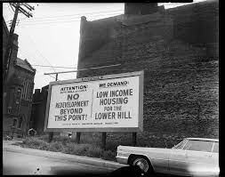
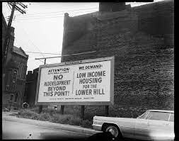

Civic Arena
It was commissioned in 1948 by Civic Light Opera president and business titan Edgar J. Kauffman, as a new venue for the CLO to perform. The groundbreaking ceremony was held in 1958, and the building was open to the public on September 17, 1961. 8000 residents and 400 businesses of the Lower Hill were required to move to make way for the construction of the Arena, and a hundred acres were bulldozed. Housing was promised for the displaced residents, but it never happened. Many fled to other neghborhoods like Homewood, looking for a new home. The ones who remained, angry and deceived, organized to protest further redevelopment.

 
